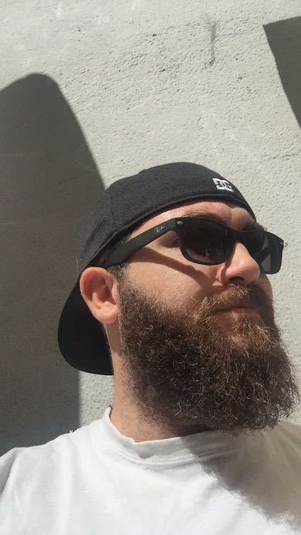

Llevo año y medio aprendiendo buenas prácticas y diferentes lenguajes en Devscola en diversos cursos intensivos y proyectos prácticos. Actualmente estoy asistiendo a un bootcamp intensivo de 3 meses para completar mi formación. Mi perfil es Full Stack Junior al haber practicado tanto la parte de Front, de Back y haciendo deploy con integración continua (a parte de las skills ya mencionadas en mi curriculum). Además, estos perfiles siempre se han trabajado junto a la metodología Agile que nos inculcan desde el principio. A parte de ser tutorizado durante mi proceso de formación y creación de proyectos, también he participado en la tutorización de las personas nuevas que han comenzado a programar.
En paralelo a esta formación, realicé 3 meses de prácticas remuneradas en una empresa que usaba principalmente Java. De esta experiencia pude concluir que sabiendo programar correctamente, el cambio de idioma es solo un proceso de adaptación y que la programación es aprendizaje constante. Es uno de los principios que más nos recalcan en Devscola.
En cuanto a mí, soy una persona trabajadora, perfeccionista y constante. Esto al final se traduce en que me gusta hacer bien mi trabajo y que el cliente quede satisfecho. Otras de mis aptitudes es el pensamiento horizontal que he desarrollado con el tiempo, siendo capaz de resolver problemas complicados con soluciones diferentes y creativas. En cuanto a la programación, el ámbito que actualmente más me interesa es el de la ciberseguridad y es mi meta a cumplir a largo plazo. Hasta entonces, quiero obtener una buena base.